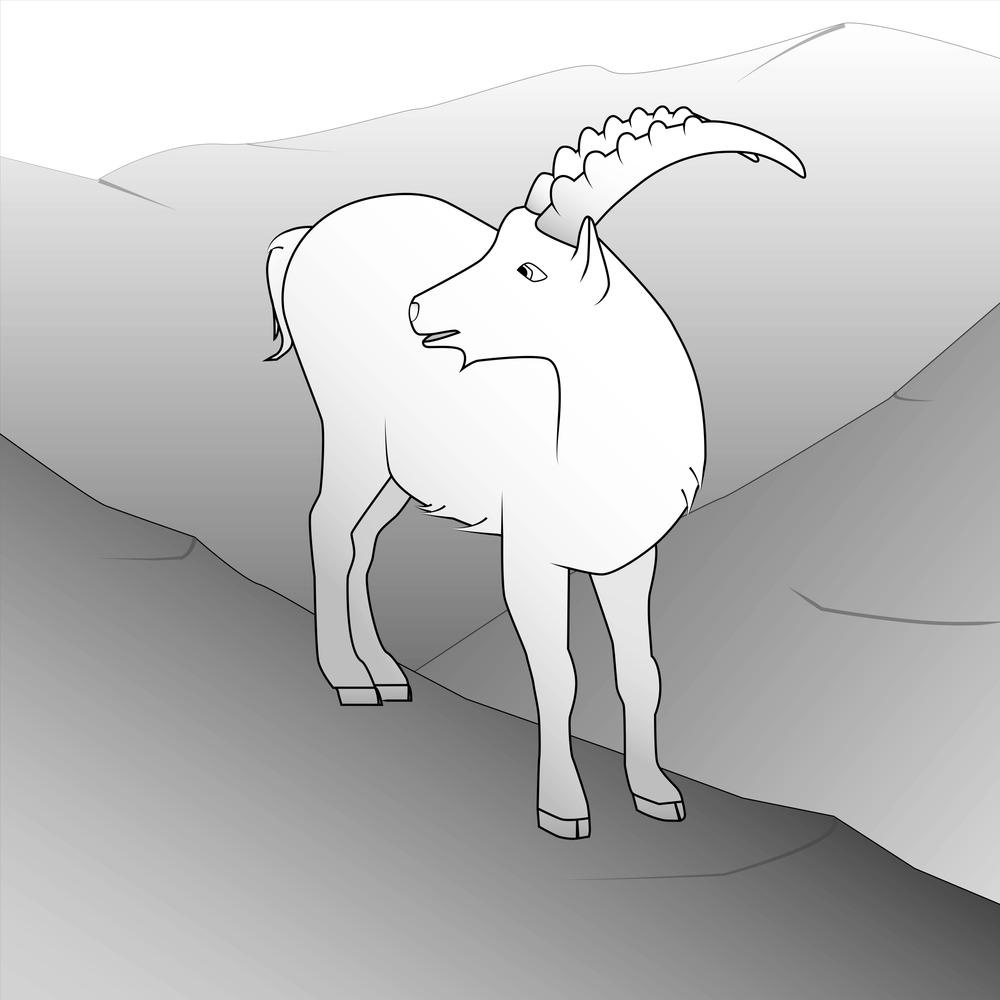

Ibex
[2020]
Ibex is a terrain modeling plug-in for Grasshopper that converts ArcGIS digital elevation models to Rhino meshes. Free to download at Food4Rhino.
Rendering of the Grand Canyon, produced with Ibex
Ibex outputs, from left to right: base terrain model, terrain model with elevation color ramp applied, terrain model with orthoimagery applied
Ibex Grasshopper icons, from top-left, clockwise: Import Terrin, Project Buildings to Terrain, Apply Orthoimagery, Export Terrain

Ibex logo (Credit: Hannah Van der Eb)